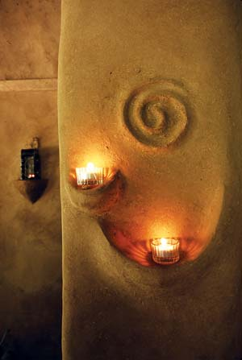

CATHERINE WANEK
To make this cat, Denzer hammered pegs into an existing cob wall, wove a coarse web of baling twine between them and added “strawey” handfuls of mud around the form. Then he applied finish plaster for finer detail.